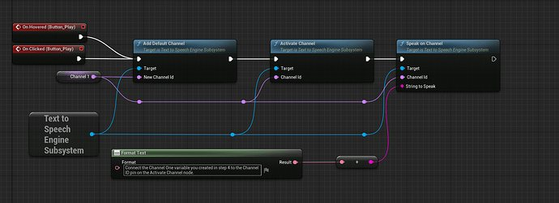

An eight-page shop website, researched, built and tested
Four tasks over four months: compare two real websites, design an eight-screen storyboard for a mobile phone shop, build it, then test it and review it against the design.
Built and tested
The brief
I was set the role of a junior web developer building a website for MobileWorldStation, a mobile phone shop in West Sussex. It is a coursework scenario rather than a real paying client, and I have not invented any contact details for the business.
From my own analysis of what the site needed:
- Purpose: promote and sell mobile phones, accessories and services.
- Audience: the general public interested in mobile
technology, aged 16 to 60. The brief only says
anyone who is interested in buying mobile phones
, so the age range is my own reading of who would actually use the site. - User needs: easy navigation and fast loading; clear product information and pricing; multimedia content to engage users; interactive features like feedback forms; and access to external resources and community forums.
Task 1: comparing two real websites
Before designing anything I reviewed two websites in the same industry and wrote up how their features affect presentation, usability, accessibility and performance. I chose godotengine.org and unrealengine.com, because they sell the same kind of thing to the same kind of person and do it in almost opposite ways.
| Feature | Godot Engine | Unreal Engine |
|---|---|---|
| Action buttons and hot spots | Prominent Download and Donate buttons; navigation links to documentation, community and the asset library. | Download and Learn More buttons; interactive sections with hover effects and embedded videos. |
| Templates | Downloadable sample projects and templates through the asset library. | Sample projects such as Lyra Starter Game and City Sample. |
| Email links | A contact address published for sponsorship and enquiries. | Contact forms and enterprise enquiry options; no direct email links shown. |
| Registration and logins | No login system for general users; open access to resources. | Sign-in for personalised access, downloads and community features. |
| Forms | Donation form; bug reporting and documentation contribution forms. | Enterprise contact forms; learning registration and support requests. |
| Accessibility | Accessibility improvements in Godot 4.5, including screen reader support through AccessKit and descriptions on interface elements. | No explicit accessibility statement on the site itself. |
| E-commerce facilities | Asset library offers free tools and templates; no direct sales. | A marketplace offering free and paid assets. |
| Online forums | Community section links to forums and contribution guides. | Active forums for developers, creators and learners. |
What each site does well, and badly
-
Godot Engine
- Simplicity and speed: a minimalist design loads fast and is easy to navigate, especially on a slow connection.
- Open access: no login needed to download the engine or read the documentation.
- Community focused: forums, contribution guides and transparency.
- Limited visual appeal: sparse animation or interactive demos may feel underwhelming to a new visitor.
- No built-in text scaling: readers with visual impairments have to rely on browser settings.
- No account personalisation, so no saved preferences.
-
Unreal Engine
- High-end presentation: rich visuals, embedded video and dynamic transitions.
- Personalised experience: a login system gives tailored access to downloads, learning paths and community tools.
- Marketplace integration sits neatly inside the rest of the site.
- Heavy load time: high-resolution media may slow performance on older devices or poor connections.
- Overwhelming for beginners: cinematic layout and technical language can intimidate.
- Navigation complexity: deep menus and many subpages mean more clicks.
What I would fix about this research now
Re-reading it to build this page, three claims in my write-up do not match my own screenshots, and I would rather say so than leave them standing.
- I described the Unreal navigation as containing Products, Solutions, Learning, Community and Support. Every screenshot I took shows Overview, Uses, News, Forums, Documentation, Learning, Connect and Fab. Only Learning matches.
- I wrote that the Unreal call to action is labelled
Download Now
. The buttons in my own captures readGet Unreal Engine
andDownload
. - I said the Godot home page carries an integrated Twitter/X feed. None of my four captures of that page shows one; they show a Latest News block of article cards.
I also wrote that Unreal makes no mention of accessibility, and then put a screenshot of its Text To Speech Engine Subsystem on the same slide. The image contradicts the sentence.

Two other things worth being straight about. My deck has no conclusion slide and makes no recommendation about which site is better, even though that would have been the natural next step towards my own design. And there is no scoring system behind the comparison: the eight features are headings, not a rubric with marks.
Task 2: designing the site
The brief asked for a storyboard of at least eight panels, one per page. I drew all eight, annotated with what goes where, and worked them up in two colour treatments before choosing one.
| Page | File | Layout and content |
|---|---|---|
| Home | /index.html | Logo, welcome message, navigation menu, featured products, video banner |
| Phones | /phones.html | Grid of phone models with specs, prices and images |
| Accessories | /accessories.html | Product gallery with filters, for example cases, chargers, headphones |
| Services | /services.html | Repairs, SIM cards and contracts, with an embedded audio explainer |
| About Us | /about.html | Company history, team photos, mission statement |
| Contact | /contact.html | Feedback form, map, contact details |
| Forum | /forum.html | Link to external forum, brief introduction to the community |
| Offers | /offers.html | Promotional video, discount table, external links to partner deals |
Styles applied consistently
- Colour: blue
#007BFF, white#FFFFFFand grey#CCD1D6. - Typography: Open Sans for body text, Roboto for headings.
- Layout: grid-based, with a header and footer template reused across every page.
- Buttons: rounded corners, hover effects, consistent placement.
- Formats: HTML5, CSS3 and JavaScript.
Those three hex codes are the reason this portfolio looks the way it does. I
reused them here, with one change: #007BFF on white measures 3.98:1,
which is below the 4.5:1 that WCAG AA asks for on body-size text, so links and
small text on this site use a darkened #0B57D0 instead and
#007BFF is kept for large type and accents.
Interactive features I specified
- A feedback form on the Contact page.
- Hover effects on product images.
- Embedded video and audio.
- Clickable product filters.
Where the assets came from
| Asset type | Source | Licence |
|---|---|---|
| Phone images | Samsung and Apple official sites | Commercial use allowed with attribution |
| Icons | Flaticon | Free with attribution |
| Audio | FreeSound | Royalty-free |
| Video | Created in-house | Original |
My own original assets were the logo, the promotional video and the audio explainer for the services page. Looking at this table again, it records the source and the permission but not the individual file, the URL or the date I accessed it, which is what a full reference list would need.
The test plan
| Test | Description | Expected result |
|---|---|---|
| Navigation | Click through all menu links | All pages load correctly |
| Form submission | Submit feedback form | Confirmation message appears |
| Multimedia | Play video and audio | Smooth playback |
| Responsiveness | Resize browser | Layout adjusts correctly |
| External links | Click forum and partner links | Redirects to correct site |
Why this design, and what limited it
It balances simplicity with interactivity, ensuring fast load times and clear navigation. The use of multimedia assets makes the site engaging, while forms and forums encourage user interaction.
My design justification
Three constraints shaped it:
- Software: using free tools like VS Code, GIMP and Audacity.
- Time: efficient layout and asset reuse to meet deadlines.
- Budget: reliance on royalty-free and ready-made assets.
Tasks 3 and 4: building it, testing it, reviewing it
All eight pages were built, linked together and tested. This is a walkthrough of the finished site.
I built it under the name TeleConnect rather than MobileWorldStation. The structure is the one I storyboarded: the same eight pages, the same navigation, the same blue and white scheme, plus a cart.
Against the four interactive features I specified in Task 2: the feedback form is on the Contact page, the product cards respond on hover, there is embedded video on Offers and an audio explainer on Services, and the Accessories and Phones pages have clickable filters. The cart was not in my storyboard; I added it while building because a shop without one did not make sense.
What my assessor recorded about this stage:
You prepared assets and content for the website, demonstrating awareness of purpose, listing sources of assets and able to develop a website containing at various eight interlinked web pages, demonstrating awareness of purpose including interactive components, demonstrating awareness of user requirements and taking account of usability.
You tested the website for functionality and purpose, repairing any faults, and documenting changes.
As per the feedback, you improvised it further, put the evidence of the received feedback from others on the quality of the website, and use it to improve the website, showing awareness of user requirements.
You reviewed the extent to which the finished website meets the needs of purpose and user requirements, while considering feedback from others and constraints and evaluate the final website against the design and justify any changes made, making recommendations for further improvements.
My assessor, on Tasks 3 and 4
Two things about this build I need to sort out
- Why the brand changed. The brief and my storyboard say MobileWorldStation. The site I built says TeleConnect. I know which one I built, but I have not written down why I renamed it, and an assessor is entitled to ask.
- Where the source files are. The only evidence of the built site in this portfolio is the screen recording above. The HTML, CSS and JavaScript are not here, and the brief asks for a digital copy of the website. I need to find them and add them so this page can link to the real thing rather than a video of it.
Two smaller points: the site uses dollar prices and placeholder company copy
such as since 2010
and 500K+ Happy Customers
, which is fine for
coursework but should not be read as a real trading business. And my Unit 13
presentation files are currently sitting in my Unit 7 coursework folder.
Feedback on the whole unit
Cristian, Great job on your coursework! I am particularly impressed with the animations you have included in your slide deck. To further enhance your presentation, consider adding a title slide at the beginning that includes your name and student ID. Additionally, try to review how the features of both websites contribute to performance, usability, and accessibility. Providing specific examples or comparisons will strengthen your research. Overall, you have done an excellent job, with these small additions, your work can reach an even higher standard.
My assessor, on Task 1
Cristian, your website design shows that you understand the project requirements well. You included all the important components, like who will use the site, what users need, a map of the site, wireframes, different design ideas, a list of things you need, and a test plan. Your explanation of your design choices shows you think carefully about your work. Keep putting up the great work!
My assessor, on Task 2
The Task 1 note asked me to review how each site's features affect performance, usability and accessibility with specific examples. That is the weakest part of the research, and it is the same weakness as the three mismatches I listed above: I described features rather than testing them. If I did Task 1 again I would open both sites side by side, time them, and check the accessibility claims rather than repeating them.
The animations
the feedback praises are how the deck is built: each
slide carries the previous slide's blocks plus one new one, so the argument
assembles itself as you move through it rather than appearing all at once.
What I would do differently
- Finish the argument. Task 1 ends with two lists of strengths and weaknesses and no conclusion. The whole point of comparing two sites was to decide what to carry into my own, and I never wrote that down.
- Test the claims I make. Three of my statements are contradicted by my own screenshots, which would not have survived a single check.
- Reference properly. My table of sources records where things came from but not which file or when, which makes it hard to verify.
- Record test results, not just tests. My test plan lists what to check and what should happen, but has no column for what actually happened.